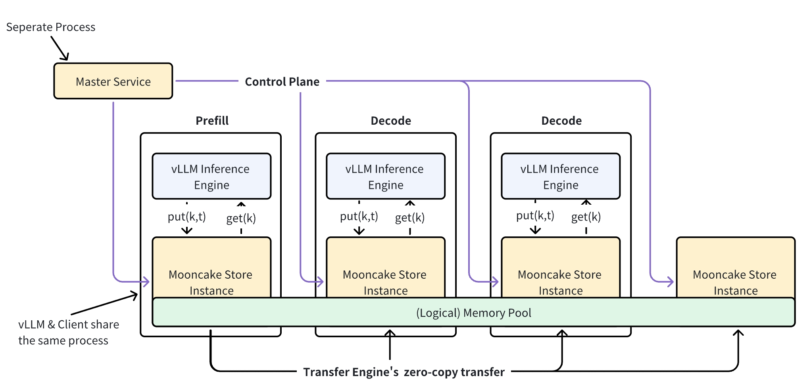

Mooncake#
Overview#
Mooncake is an open-source distributed KV cache storage system designed specifically for LLM inference scenarios. The system creates a distributed memory pool by aggregating memory space contributed by various client nodes, enabling efficient resource utilization across clusters.
By pooling underutilized DRAM and SSD resources from multiple nodes, the system forms a unified distributed storage service that maximizes resource efficiency.
Key Features#
Distributed memory pooling: Aggregates memory contributions from multiple client nodes into a unified storage pool
High bandwidth utilization: Supports striping and parallel I/O transfer of large objects, fully utilizing multi-NIC aggregated bandwidth
RDMA optimization: Built on Transfer Engine with support for TCP, RDMA (InfiniBand/RoCEv2/eRDMA/NVIDIA GPUDirect)
Dynamic resource scaling: Supports dynamically adding and removing nodes for elastic resource management
For detailed architecture information, see the Mooncake Architecture Guide.
Quick Start#
Install Mooncake via pip:
pip install mooncake-transfer-engine
This package includes all necessary components:
mooncake_master: Master service that manages cluster metadata and coordinates distributed storage operationsmooncake_http_metadata_server: HTTP-based metadata server used by the underlying transfer engine for connection establishmentMooncake Python bindings
For production deployments or custom builds, see the Build Instructions.
Setup and Deployment#
Prerequisites:
Machine with at least one GPU for vLLM inference
RDMA-capable network hardware and drivers (recommended) or TCP network
Python 3.8+ with pip
vLLM and LMCache installed
Step 1: Start Infrastructure Services
Start the metadata server:
# HTTP metadata server (recommended for development)
mooncake_http_metadata_server
Start the Mooncake master service:
# Master service (use -v=1 for verbose logging)
mooncake_master
Expected output:
Master service started on port 50051
HTTP metrics server started on port 9003
Master Metrics: Storage: 0.00 B / 0.00 B | Keys: 0 | ...
Step 2: Create Configuration File
Create your mooncake-config.yaml:
chunk_size: 256
local_device: "cpu"
remote_url: "mooncakestore://127.0.0.1:50051/"
remote_serde: "naive"
local_cpu: False
max_local_cpu_size: 5
extra_config:
local_hostname: "localhost"
metadata_server: "http://127.0.0.1:8080/metadata"
protocol: "tcp"
master_server_address: "localhost:50051"
global_segment_size: 3355443200
local_buffer_size: 1073741824
transfer_timeout: 1
Step 3: Start vLLM with Mooncake
LMCACHE_CONFIG_FILE="mooncake-config.yaml" \
LMCACHE_USE_EXPERIMENTAL=True \
vllm serve \
meta-llama/Llama-3.1-70B-Instruct \
--max-model-len 65536 \
--kv-transfer-config \
'{"kv_connector":"LMCacheConnectorV1", "kv_role":"kv_both"}'
Step 4: Verify the Setup
Test the integration with a sample request:
curl -X POST "http://localhost:8000/v1/completions" \
-H "Content-Type: application/json" \
-d '{
"model": "meta-llama/Llama-3.1-70B-Instruct",
"prompt": "The future of AI is",
"max_tokens": 100,
"temperature": 0.7
}'
Debugging Tips:
Enable verbose logging:
mooncake_master -v=1Check service status:
# Check if services are running ps aux | grep mooncake netstat -tlnp | grep -E "(8080|50051)"Monitor metrics:
Access metrics at
http://localhost:9003when master service is running.
Configuration#
LMCache Parameters:
Parameter |
Default |
Description |
|---|---|---|
|
256 |
Number of tokens per KV chunk |
|
“cpu” |
Local storage device type |
|
Required |
Mooncake store connection URL (format: |
|
“naive” |
Serialization method for remote storage |
|
False |
Enable/disable local CPU caching (set to False for pure Mooncake evaluation) |
|
Required |
Maximum local CPU cache size in GB (required even when local_cpu is False) |
Mooncake Parameters (via extra_config):
Parameter |
Default |
Description |
|---|---|---|
|
Required |
Hostname/IP of the local node for Mooncake client identification |
|
Required |
Address of metadata coordination server (etcd/Redis/HTTP format) |
|
Required |
Mooncake master service address (host:port format) |
|
“tcp” |
Communication protocol (“rdma” for high performance, “tcp” for compatibility) |
|
“” |
RDMA device specification (e.g., “erdma_0,erdma_1” or “mlx5_0,mlx5_1”) |
|
3355443200 |
Memory size contributed by each vLLM worker in bytes (~3.1GB) |
|
1073741824 |
Local buffer allocation size in bytes (~1GB) |
|
1 |
Timeout for transfer operations in seconds |
Important
Understanding global_segment_size: This parameter defines the amount of memory each vLLM worker contributes to the distributed memory pool.
The total cluster memory available for KV cache storage will be: number_of_vllm_workers × global_segment_size.
Adjust this value based on your available system memory and expected cache requirements.